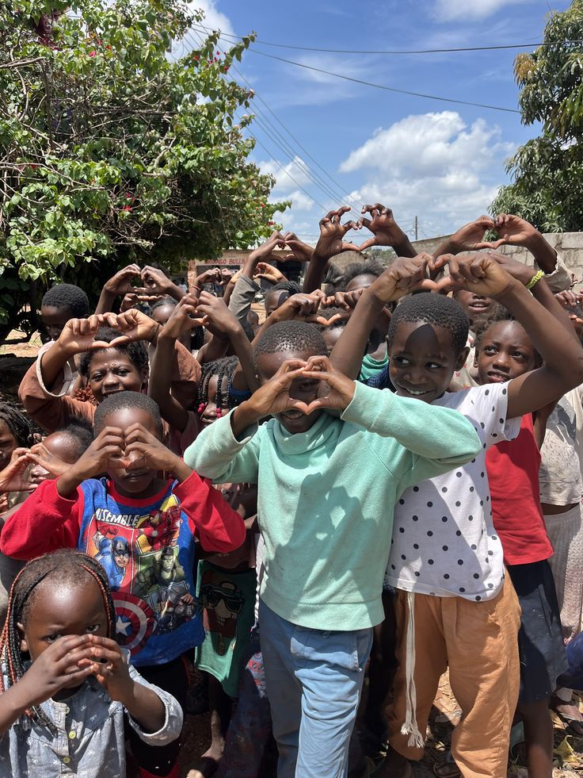

Une organisation sociale, humanitaire, éducative et chrétienne, au service des personnes et de la communauté.
Nous rejoindreAu service des plus fragiles et de la jeunesse, dans un esprit de solidarité et d'entraide.
Apporter un soutien concret aux personnes qui vivent dans la rue.
Accompagner et soutenir les personnes âgées dans leur quotidien.
Être présent auprès de ceux qui traversent le deuil et la solitude.
Encourager les étudiants et les élèves dans leur parcours scolaire et personnel.
Promouvoir l'éducation et former des leaders responsables.
Développer le partage et l'entraide au sein de la communauté.
Promouvoir les valeurs chrétiennes comme fondement de nos engagements.
Quelques instants partagés avec les enfants et les équipes.




Le Forum des Décideurs est une organisation sociale, humanitaire, éducative et chrétienne. Son fondement spirituel et moral est le Christ.
Nous agissons pour aider les personnes sans-abri, assister les personnes âgées, soutenir les veufs et les veuves, accompagner les étudiants et promouvoir l'éducation et le leadership.
Une question ? Écrivez-nous.